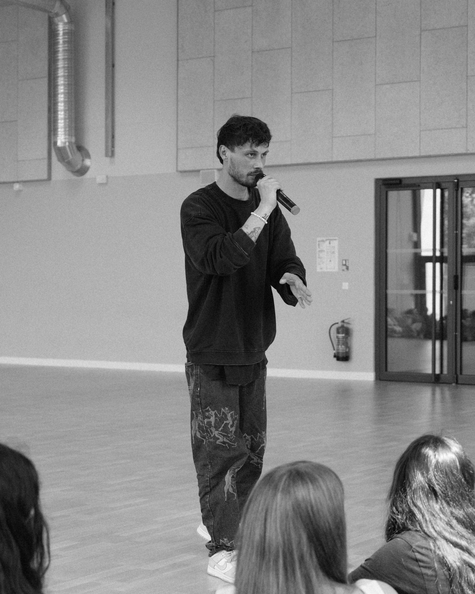

Des ateliers
Slam, Rap & Éloquence dans toute la France
Slam, rap, battle, poésie, éloquence — Esope est un artiste pluridisciplinaire
aux domaines de prédilection variés. Pédagogue reconnu, il a donné plus de 300 ateliers dans
la France entière.
Les ateliers slam visent à réconcilier les jeunes avec la langue
française par le biais d'un art actuel et accessible. Les élèves y sont sensibilisés à la
force des mots et à l'importance de les transmettre. Pour vous, enseignant, c'est un
support réel pour introduire la partie du programme sur la poésie.
Outre le travail sur la prise de parole en public, la gestion du
stress et la posture, l'atelier éloquence présente l'intérêt d'encourager les participants
à se dépasser humainement à travers des objectifs communs. Les thématiques sont travaillées
en atelier, puis restituées devant une tribune.
De la rédaction d'un texte à l'enregistrement d'une chanson et la
réalisation d'un clip vidéo, les ateliers rap permettent aux jeunes d'être en immersion
artistique à travers des objectifs très concrets. Le résultat est tangible : ils repartent
avec quelque chose qui existe.
Une discipline insolite qui met le verbe à l'honneur dans un exercice
rhétorique positif. Le principe est simple : deux artistes se rencontrent sur scène pour
partager une joute verbale flatteuse. Redoutable pour souder un groupe et détourner les
codes de la moquerie.
Enseignants, coordinateurs, équipes soignantes :
celles et ceux qui m'ont fait intervenir racontent ce qui s'est passé dans leur groupe.
« Ce qui m’a frappée, c’est le silence. Vingt-huit élèves de troisième, penchés sur leur feuille pendant quarante minutes, sans un bruit. Je n’avais jamais obtenu ça en cours. »
Professeure de français
Collège · classe de 3e · parcours de 10 h
« Un élève qui ne parlait à personne depuis la rentrée est passé au micro. La classe l’a applaudi debout. Il a pleuré, et nous aussi. Depuis, il lève la main. »
Professeur principal
Lycée professionnel · atelier slam
« Le groupe ne se supportait pas en début d’année. Après trois séances, ils s’écoutaient lire leurs textes. Ce n’est pas de la magie : Esope pose un cadre et il ne lâche rien. »
Coordinatrice jeunesse
MJC · groupe de 12–17 ans
« Ils sont arrivés en disant « nous on n’écrit pas ». Ils sont repartis avec un texte chacun, et deux d’entre eux ont demandé s’ils pouvaient continuer pendant les vacances. »
Animateur référent
Structure associative · battle de compliments
« Nos jeunes ont enregistré un titre et tourné un clip. Le jour de la projection, ils ont fait venir leurs familles. Pour plusieurs d’entre eux, c’était la première fois qu’ils montraient quelque chose dont ils étaient fiers. »
Directrice de structure jeunesse
Atelier rap · parcours annuel
« En service pédopsychiatrie, on mesure les choses autrement. Deux adolescentes qui n’avaient pas pris la parole en groupe depuis des mois ont lu leur texte à voix haute. L’équipe soignante en parle encore. »
Cadre de santé
Hôpital de jour · ateliers en petit groupe
« Quatrième année qu'on le fait revenir. Je pourrais citer de tête cinq ou six élèves pour qui ça a été un basculement — et deux qui écrivent encore aujourd'hui, bien après nous avoir quittés. »
Professeure de lettres
Collège · projet reconduit depuis quatre ans
« On a fait passer les six classes de quatrième. Se faire complimenter devant tout son niveau, et devoir l'assumer debout : certains n'avaient jamais été applaudis de leur scolarité. »
Professeur d'histoire-géographie
Collège · tout un niveau de 4e · battle de compliments
« Plusieurs de nos élèves sont en France depuis moins d'un an. Ils ont écrit en français et l'ont dit debout devant les autres classes. Ce jour-là, la langue a cessé d'être une matière à rattraper. »
Enseignante en dispositif UPE2A
Collège · atelier slam
« Le chapitre poésie, chaque année, c'était le moment où je perdais la moitié de la classe. Là, ils ont réclamé la séance suivante. J'ai gardé leurs textes affichés jusqu'à la fin de l'année. »
Professeur des écoles
CM2 · atelier slam
« Sur seize élèves passés au grand oral, quinze nous ont dit y avoir repensé au moment d'entrer dans la salle. Le travail sur le souffle et sur les silences, c'est ce qu'ils citent en premier. »
Professeure référente du grand oral
Lycée · ateliers éloquence
« On craignait de ne pas remplir : on a refusé du monde à la deuxième séance. Des adolescents qui ne poussaient jamais la porte sont venus, et sont revenus. »
Responsable de l'action culturelle
Médiathèque · cycle d'ateliers

L'intervenant
Esope
Champion de France de Slam et lauréat de concours prestigieux, à 29 ans, Esope est
passionné par l'écriture et sa transmission.
Depuis 2016, il imagine et met à disposition des séances d'ateliers visant à partager sa
passion des mots dans les établissements scolaires et autres structures.
Champion de France de Slam
Champion Sud-Ouest de Slam
Coach du Champion de France de Slam
Juré d'événements nationaux
Lauréat de concours prestigieux
Participant du Rap Contenders
Agréé Éducation nationale · Éligible pass Culture · Déplacement dans toute la France
Décrivez-moi votre contexte en quelques lignes : le niveau, le
nombre d'élèves, la période visée, ce que vous aimeriez qu'il se passe. Je vous réponds
avec une proposition adaptée — chaque projet est construit au cas par cas.